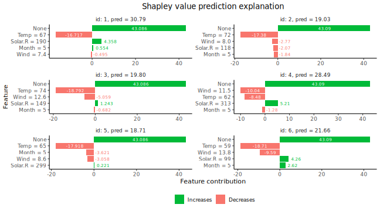
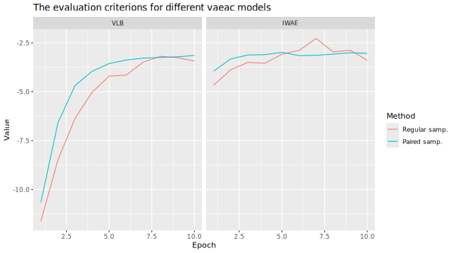
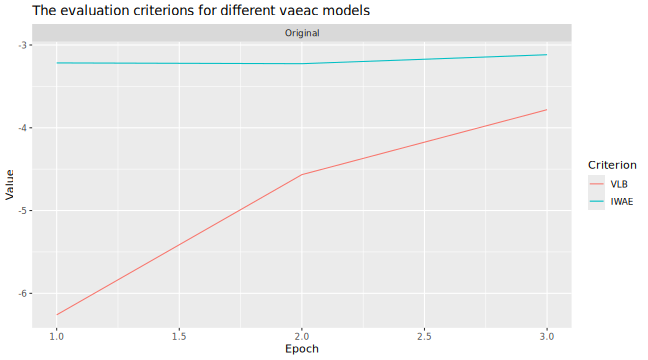
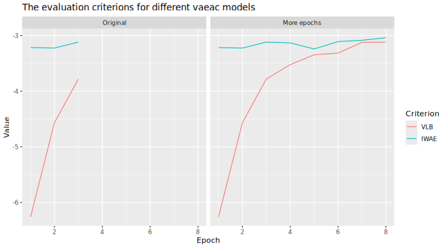
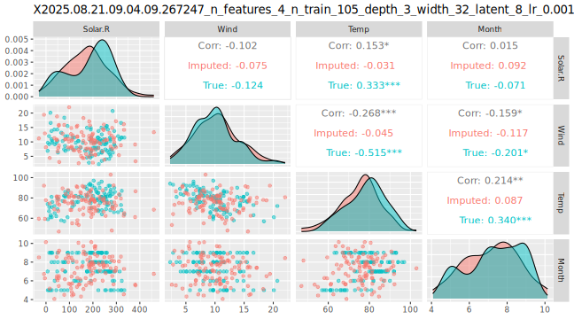
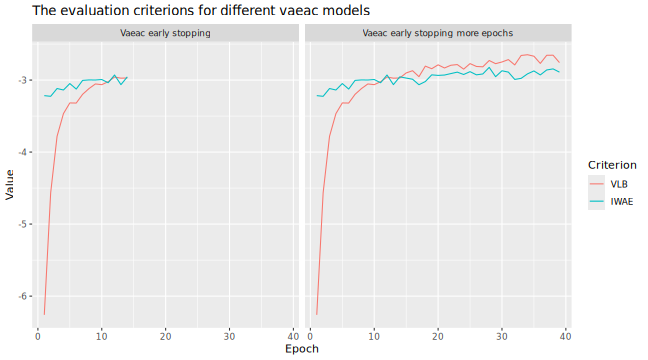
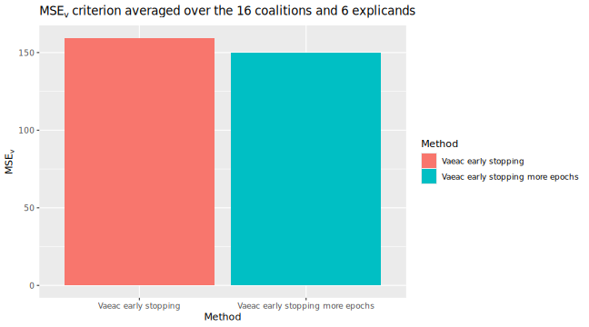
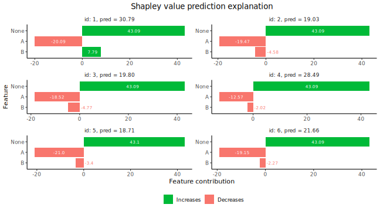
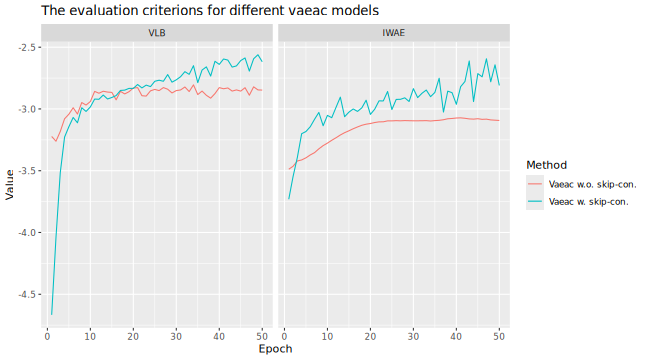
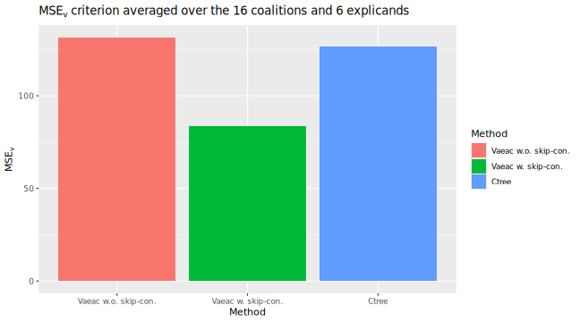

More details and advanced usage of the
vaeac approach
Lars Henry Berge Olsen
Source:vignettes/understanding_shapr_vaeac.Rmd
understanding_shapr_vaeac.RmdIn this vignette, we elaborate and illustrate the vaeac
approach in more depth than in the main vignette. In the main vignette,
only a few basic examples of using vaeac is included, while
we here showcase more advanced usage. See the overview above for what
topics that are covered in this vignette.
vaeac
An approach that supports mixed features is the Variational
AutoEncoder with Arbitrary Conditioning (Olsen et
al. (2022)), abbreviated to vaeac. The
vaeac is an extension of the regular variational
autoencoder (Kingma and Welling (2014)),
but instead of giving a probabilistic representation of the distribution
\(p(\boldsymbol{x})\) it gives a
probabilistic representation of the conditional distribution \(p(\boldsymbol{x}_{\bar{\mathcal{S}}} \mid
\boldsymbol{x}_{\mathcal{S}})\), for all possible feature subsets
\(\mathcal{S}\subseteq\mathcal{M}\)
simultaneously, where \(\mathcal{M}\)
is the set of all features. That is, only a single vaeac
model is needed to model all conditional distributions.
The vaeac consists of three neural networks: a full
encoder, a masked encoder, and a decoder. The
encoders map the full and masked/conditional input representations,
i.e., \(\boldsymbol{x}\) and \(\boldsymbol{x}_{\mathcal{S}}\),
respectively, to latent probabilistic representations. Sampled instances
from this latent probabilistic representations are sent to the decoder,
which maps them back to the feature space and provides a samplable
probabilistic representation for the unconditioned features \(\boldsymbol{x}_{\bar{\mathcal{S}}}\). The
full encoder is only used during the training phase of the
vaeac model to guide the training process of the masked
encoder, as the former relies on the full input sample \(\boldsymbol{x}\), which is not accessible
in the deployment phase (when we generate the Monte Carlo samples), as
we only have access to \(\boldsymbol{x}_{\mathcal{S}}\). The
networks are trained by minimizing a variational lower bound, and see
Section 3 in Olsen et al. (2022) for an
in-depth introduction to the vaeac methodology. We use the
vaeac model at the epoch which obtains the lowest
validation IWAE score to generate the Monte Carlo samples used in the
Shapley value computations.
We fit the vaeac model using the torch package
in \(\textsf{R}\) (Falbel and Luraschi (2023)). The main parameters
are the the number of layers in the networks (vaeac.depth),
the width of the layers (vaeac.width), the number of
dimensions in the latent space (vaeac.latent_dim), the
activation function between the layers in the networks
(vaeac.activation_function), the learning rate in the ADAM
optimizer (vaeac.lr), the number of vaeac
models to initiate to remedy poorly initiated model parameter values
(vaeac.n_vaeacs_initialize), and the number of learning
epochs (vaeac.epochs). Call
?shapr::setup_approach.vaeac for a more detailed
description of the parameters.
There are additional extra parameters which can be set by including a
named list in the call to the explain() function. For
example, we can the change the batch size to 32 by including
vaeac.extra_parameters = list(vaeac.batch_size = 32) as a
parameter in the call the explain() function. See
?shapr::vaeac_get_extra_para_default for a description of
the possible extra parameters to the vaeac approach. We
strongly encourage the user to specify the main and extra parameters to
the vaeac approach at the correct place in the call to the
explain() function. That is, the main parameters are
directly entered to the explain() function, while the extra
parameters are included in a named list called
vaeac.extra_parameters. However, the vaeac
approach will try to correct for misplaced and duplicated parameters and
give warnings to the user.
Code Examples
We now demonstrate the vaeac approach on several
different use cases. Note that this vignette runs on CPU, but all code
sections below can be run on GPU too. To enable GPU, we have to include
vaeac.extra_parameters = list(vaeac.cuda = TRUE) in the
calls to the explain() function. See CPU vs GPU for more information.
Basic Example
Here we go through how to use the vaeac approach on the
same data as in the main vignette
First we set up the model we want to explain.
library(xgboost)
library(data.table)
data("airquality")
data <- data.table::as.data.table(airquality)
data <- data[complete.cases(data), ]
x_var <- c("Solar.R", "Wind", "Temp", "Month")
y_var <- "Ozone"
ind_x_explain <- 1:6
x_train <- data[-ind_x_explain, ..x_var]
y_train <- data[-ind_x_explain, get(y_var)]
x_explain <- data[ind_x_explain, ..x_var]
# Fitting a basic xgboost model to the training data
model <- xgboost(
data = as.matrix(x_train),
label = y_train,
nround = 100,
verbose = FALSE
)
# Specifying the phi_0, i.e. the expected prediction without any features
prediction_zero <- mean(y_train)First vaeac example
We are now going to explain predictions made by the model using the
vaeac approach.
n_samples <- 25 # Low number of MC samples to make the vignette build faster
n_batches <- 1 # Do all coalitions in one batch
vaeac.n_vaeacs_initialize <- 2 # Initialize several vaeacs to counteract bad initialization values
vaeac.epochs <- 4 # The number of training epochs
explanation <- explain(
model = model,
x_explain = x_explain,
x_train = x_train,
approach = "vaeac",
prediction_zero = prediction_zero,
n_samples = n_samples,
n_batches = n_batches,
vaeac.epochs = vaeac.epochs,
vaeac.n_vaeacs_initialize = vaeac.n_vaeacs_initialize
)
#> Note: Feature classes extracted from the model contains NA.
#> Assuming feature classes from the data are correct.We can look at the Shapley values.
# Printing and ploting the Shapley values.
# See ?shapr::explain for interpretation of the values.
print(explanation$shapley_values)
#> none Solar.R Wind Temp Month
#> <num> <num> <num> <num> <num>
#> 1: 43.086 6.1207 3.1430 -18.6779 -2.88614
#> 2: 43.086 -2.0779 -2.5548 -20.1182 0.69569
#> 3: 43.086 3.0385 -5.5121 -18.2575 -2.55871
#> 4: 43.086 3.0009 -4.7220 -8.9452 -3.92486
#> 5: 43.086 -1.1022 -4.4319 -13.5459 -5.29567
#> 6: 43.086 3.9320 -9.8445 -11.9489 -3.56018
plot(explanation)
Pre-trained vaeac
If the user has a pre-trained vaeac model (from a
previous run), the user can send that to the explain()
function and shapr will skip the training of a new
vaeac model and rather use the provided vaeac
model. This is useful if we want to explain new predictions using the
same combinations/coalitions as previously, i.e., we have a new
x_explain. Note that the new x_explain must
have the same features as before.
The vaeac model is accessible via
explanation$internal$parameters$vaeac. Note that if we set
verbose = 2 in explain(), then
shapr will give a message that it loads a pretrained
vaeac model instead of training it from scratch.
In this example, we extract the trained vaeac model from
the previous example and send it to explain().
# Send the pre-trained vaeac model
expl_pretrained_vaeac <- explain(
model = model,
x_explain = x_explain,
x_train = x_train,
approach = "vaeac",
prediction_zero = prediction_zero,
n_batches = n_batches,
n_samples = n_samples,
vaeac.extra_parameters = list(
vaeac.pretrained_vaeac_model = explanation$internal$parameters$vaeac
)
)
#> Note: Feature classes extracted from the model contains NA.
#> Assuming feature classes from the data are correct.
# Check that this version provides the same Shapley values
all.equal(explanation$shapley_values, expl_pretrained_vaeac$shapley_values)
#> [1] TRUEPre-trained vaeac (path)
We can also just provide a path to the stored vaeac
model. This is beneficial if we have only stored the vaeac
model on the computer but not the whole explanation object.
The possible save paths are stored in
explanation$internal$parameters$vaeac$model. Note that if
we set verbose = 2 in explain(), then
shapr will give a message that it loads a pretrained
vaeac model instead of training it from scratch.
# Call `explanation$internal$parameters$vaeac$model` to see possible vaeac models. We use `best` below.
# send the pre-trained vaeac path
expl_pretrained_vaeac_path <- explain(
model = model,
x_explain = x_explain,
x_train = x_train,
approach = "vaeac",
prediction_zero = prediction_zero,
n_batches = n_batches,
n_samples = n_samples,
vaeac.extra_parameters = list(
vaeac.pretrained_vaeac_model = explanation$internal$parameters$vaeac$models$best
)
)
#> Note: Feature classes extracted from the model contains NA.
#> Assuming feature classes from the data are correct.
# Check that this version provides the same Shapley values
all.equal(explanation$shapley_values, expl_pretrained_vaeac_path$shapley_values)
#> [1] TRUESpecified n_combinations and more batches
In this section, we discuss two general shapr parameters
in the explain() function that are method independent,
namely, n_combinations and n_batches. The user
can limit the Shapley value computations to only a subset of coalitions
by setting the n_combinations parameter to a value lower
than \(2^{n_\text{features}}\). To
lower the memory usage, the user can split the coalitions into several
batches by setting n_batches to a desired number. In this
example, we set n_batches = 5 and
n_combinations = 10 which is less than the maximum of
16.
Note that we do not need to train a new vaeac model as
we can use the one above trained on all 16 coalitions as we
are now only using a subset of them. This is not applicable the other
way around.
# send the pre-trained vaeac path
expl_batches_combinations <- explain(
model = model,
x_explain = x_explain,
x_train = x_train,
approach = "vaeac",
prediction_zero = prediction_zero,
n_combinations = 10,
n_batches = 5,
n_samples = n_samples,
vaeac.extra_parameters = list(
vaeac.pretrained_vaeac_model = explanation$internal$parameters$vaeac
)
)
#> Note: Feature classes extracted from the model contains NA.
#> Assuming feature classes from the data are correct.
# Gives different Shapley values as the latter one are only based on a subset of coalitions
plot_SV_several_approaches(list("Original" = explanation, "Other combi." = expl_batches_combinations))
# Here we can see that the samples coalitions are in different batches and have different weights
expl_batches_combinations$internal$objects$X
#> Key: <id_combination>
#> Index: <approach>
#> id_combination features n_features N shapley_weight approach batch
#> <int> <list> <int> <int> <int> <char> <num>
#> 1: 1 0 1 1000000 <NA> NA
#> 2: 2 3 1 4 1 vaeac 1
#> 3: 3 4 1 4 1 vaeac 3
#> 4: 4 2 1 4 1 vaeac 2
#> 5: 5 2,3 2 6 2 vaeac 5
#> 6: 6 1,4 2 6 1 vaeac 2
#> 7: 7 1,3,4 3 4 2 vaeac 5
#> 8: 8 2,3,4 3 4 1 vaeac 4
#> 9: 9 1,2,3 3 4 1 vaeac 4
#> 10: 10 1,2,3,4 4 1 1000000 <NA> 1
# Can compare that to the situation where we have exact computations (i.e., include all coalitions)
explanation$internal$objects$X
#> Key: <id_combination>
#> id_combination features n_features N shapley_weight approach batch
#> <int> <list> <int> <int> <num> <char> <num>
#> 1: 1 0 1 1.00e+06 <NA> NA
#> 2: 2 1 1 4 2.50e-01 vaeac 1
#> 3: 3 2 1 4 2.50e-01 vaeac 1
#> 4: 4 3 1 4 2.50e-01 vaeac 1
#> 5: 5 4 1 4 2.50e-01 vaeac 1
#> 6: 6 1,2 2 6 1.25e-01 vaeac 1
#> 7: 7 1,3 2 6 1.25e-01 vaeac 1
#> 8: 8 1,4 2 6 1.25e-01 vaeac 1
#> 9: 9 2,3 2 6 1.25e-01 vaeac 1
#> 10: 10 2,4 2 6 1.25e-01 vaeac 1
#> 11: 11 3,4 2 6 1.25e-01 vaeac 1
#> 12: 12 1,2,3 3 4 2.50e-01 vaeac 1
#> 13: 13 1,2,4 3 4 2.50e-01 vaeac 1
#> 14: 14 1,3,4 3 4 2.50e-01 vaeac 1
#> 15: 15 2,3,4 3 4 2.50e-01 vaeac 1
#> 16: 16 1,2,3,4 4 1 1.00e+06 <NA> 1Note that if we train a vaeac model from scratch with
the setup above, then the vaeac model will not use a
missing completely as random (MCAR) mask generator, but rather a mask
generator that ensures that the vaeac model is only trained
on the specified set of coalitions. In this case, it will be the set of
the n_combinations - 2 sampled coalitions. The minus two is
because the vaeac model will not train on the empty and
grand coalitions as they are not needed in the Shapley value
computations.
expl_batches_combinations_2 <- explain(
model = model,
x_explain = x_explain,
x_train = x_train,
approach = "vaeac",
prediction_zero = prediction_zero,
n_combinations = 10,
n_batches = 1,
n_samples = n_samples,
vaeac.n_vaeacs_initialize = 1,
vaeac.epochs = 3,
verbose = 2
)
#> Note: Feature classes extracted from the model contains NA.
#> Assuming feature classes from the data are correct.
#> Setting up the `vaeac` approach.
#> Training the `vaeac` model with the provided parameters from scratch on CPU.
#> Using 'specified_masks_mask_generator' with '8' coalitions.
#> The vaeac model contains 17032 trainable parameters.
#> Initializing vaeac number 1 of 1.
#> Best vaeac inititalization was number 1 (of 1) with a training VLB = -6.451 after 2 epochs. Continue to train this inititalization.
#> Saving `best` vaeac model at epoch 3.
#> Saving `best_running` vaeac model at epoch 3.
#> Saving `last` vaeac model at epoch 3.
#>
#> Results of the `vaeac` training process:
#> Best epoch: 3. VLB = -4.824 IWAE = -3.252 IWAE_running = -3.540
#> Best running avg epoch: 3. VLB = -4.824 IWAE = -3.252 IWAE_running = -3.540
#> Last epoch: 3. VLB = -4.824 IWAE = -3.252 IWAE_running = -3.540
#> Done with setting up the `vaeac` approach.
#> Generating Monte Carlo samples using `vaeac` for batch 1 of 1.
#> Preprocessing the explicands.
#> Generating the MC samples.
#> Postprocessing the Monte Carlo samples.Paired sampling
The vaeac approach can use paired sampling to improve
the stability of the training procedure. When using paired sampling,
each observation in the training batches will be duplicated, but the
first version will be masked by \(S\)
and the second verion will be masked by the complement \(\bar{S}\). The mask are taken from the
explanation$internal$objects$S matrix. Note that
vaeac does not check if the complement is also in said
matrix. This means that if the Shapley value explanations are computed
based on a subset of coalitions, i.e., n_combinations is
less than \(2^{n_\text{features}}\),
then the vaeac model might be trained on coalitions which
are not used when computing the Shapley values. This should not be
considered as redundant training as it increases the stablility and
performance of the vaeac model as a whole, hence, we
reccomend to use paried samping (default). Furthermore, the masks are
randomly selected for each observation in the batch. The training time
when using paired sampling is higher in comparison to random sampling
due to more complex implementation.
expl_paired_sampling_TRUE <- explain(
model = model,
x_explain = x_explain,
x_train = x_train,
approach = "vaeac",
prediction_zero = prediction_zero,
n_samples = n_samples,
n_batches = n_batches,
vaeac.epochs = 10,
vaeac.n_vaeacs_initialize = 1,
vaeac.extra_parameters = list(vaeac.paired_sampling = TRUE)
)
#> Note: Feature classes extracted from the model contains NA.
#> Assuming feature classes from the data are correct.
expl_paired_sampling_FALSE <- explain(
model = model,
x_explain = x_explain,
x_train = x_train,
approach = "vaeac",
prediction_zero = prediction_zero,
n_samples = n_samples,
n_batches = n_batches,
vaeac.epochs = 10,
vaeac.n_vaeacs_initialize = 1,
vaeac.extra_parameters = list(vaeac.paired_sampling = FALSE)
)
#> Note: Feature classes extracted from the model contains NA.
#> Assuming feature classes from the data are correct.We can compare the results by looking at the training and validation
errors and by the \(MSE_v\) evaluation
criterion. We do this by using the vaeac_plot_eval_crit()
and plot_MSEv_eval_crit() functions in the
shapr package, respectively.
explanation_list <- list("Regular samp." = expl_paired_sampling_FALSE,
"Paired samp." = expl_paired_sampling_TRUE)
vaeac_plot_eval_crit(explanation_list, plot_type = "criterion")
plot_MSEv_eval_crit(explanation_list)By looking at the time, we see that the paired version takes (a bit)
longer time in the setup_computation phase, that is, in the
training phase.
rbind(
"Paired" = expl_paired_sampling_TRUE$timing$timing_secs,
"Regular" = expl_paired_sampling_FALSE$timing$timing_secs
)
#> setup test_prediction setup_computation compute_vS shapley_computation
#> Paired 0.10987 0.055879 7.1928 0.29876 0.0043712
#> Regular 0.05501 0.037705 6.2180 0.30362 0.0044370Progressr
As discussed in the main vignette, the shapr package
provides two ways for recieving information about the progress of the
approach. First, the shapr package provides progress
updates of the computation of the Shapley values through the
progressr package. Second, the user can also get
information by setting verbose = 2 in
explain(), which will print out extra information related
to the vaeac approach. The verbose parameter
works independently of the progressr package. Meaning that
the user can chose to use none, either, or both options simultaneously.
We give two examples here, and refer the reader to the main vignette for
more detailed information.
By setting verbose = 2, we get messages about the
progress of the vaeac approach.
handlers("void") # To silence all progressr updates
expl_with_messages <- explain(
model = model,
x_explain = x_explain,
x_train = x_train,
approach = "vaeac",
prediction_zero = prediction_zero,
n_samples = n_samples,
n_batches = 5,
verbose = 2,
vaeac.epochs = 5,
vaeac.n_vaeacs_initialize = 2
)
#> Note: Feature classes extracted from the model contains NA.
#> Assuming feature classes from the data are correct.
#> Setting up the `vaeac` approach.
#> Training the `vaeac` model with the provided parameters from scratch on CPU.
#> Using 'mcar_mask_generator' with 'masking_ratio = 0.5'.
#> The vaeac model contains 17032 trainable parameters.
#> Initializing vaeac number 1 of 2.
#> Initializing vaeac number 2 of 2.
#> Best vaeac inititalization was number 2 (of 2) with a training VLB = -4.566 after 2 epochs. Continue to train this inititalization.
#> Saving `best` vaeac model at epoch 3.
#> Saving `best_running` vaeac model at epoch 3.
#> Saving `best_running` vaeac model at epoch 4.
#> Saving `best` vaeac model at epoch 5.
#> Saving `best_running` vaeac model at epoch 5.
#> Saving `last` vaeac model at epoch 5.
#>
#> Results of the `vaeac` training process:
#> Best epoch: 5. VLB = -3.318 IWAE = -3.049 IWAE_running = -3.149
#> Best running avg epoch: 5. VLB = -3.318 IWAE = -3.049 IWAE_running = -3.149
#> Last epoch: 5. VLB = -3.318 IWAE = -3.049 IWAE_running = -3.149
#> Done with setting up the `vaeac` approach.
#> Generating Monte Carlo samples using `vaeac` for batch 1 of 5.
#> Preprocessing the explicands.
#> Generating the MC samples.
#> Postprocessing the Monte Carlo samples.
#> Generating Monte Carlo samples using `vaeac` for batch 2 of 5.
#> Preprocessing the explicands.
#> Generating the MC samples.
#> Postprocessing the Monte Carlo samples.
#> Generating Monte Carlo samples using `vaeac` for batch 3 of 5.
#> Preprocessing the explicands.
#> Generating the MC samples.
#> Postprocessing the Monte Carlo samples.
#> Generating Monte Carlo samples using `vaeac` for batch 4 of 5.
#> Preprocessing the explicands.
#> Generating the MC samples.
#> Postprocessing the Monte Carlo samples.
#> Generating Monte Carlo samples using `vaeac` for batch 5 of 5.
#> Preprocessing the explicands.
#> Generating the MC samples.
#> Postprocessing the Monte Carlo samples.For more visual information, we can use the progressr
package. This can help us see the progress of the training step for the
final vaeac model. Note that one can set
verbose = 0 to not get any messages from the
vaeac approach and only get the progress bars. See the main
vignette for examples for how to change the progress bar.
library(progressr)
progressr::handlers("cli")
progressr::with_progress({
expl_with_progressr <- explain(
model = model,
x_explain = x_explain,
x_train = x_train,
approach = "vaeac",
prediction_zero = prediction_zero,
n_samples = n_samples,
n_batches = 5,
verbose = 2,
vaeac.epochs = 5,
vaeac.n_vaeacs_initialize = 2
)
})
#> Note: Feature classes extracted from the model contains NA.
#> Assuming feature classes from the data are correct.
#> Setting up the `vaeac` approach.
#> Training the `vaeac` model with the provided parameters from scratch on CPU.
#> Using 'mcar_mask_generator' with 'masking_ratio = 0.5'.
#> The vaeac model contains 17032 trainable parameters.
#> Initializing vaeac number 1 of 2.
#> Initializing vaeac number 2 of 2.
#> Best vaeac inititalization was number 2 (of 2) with a training VLB = -4.566 after 2 epochs. Continue to train this inititalization.
#> Saving `best` vaeac model at epoch 3.
#> Saving `best_running` vaeac model at epoch 3.
#> Saving `best_running` vaeac model at epoch 4.
#> Saving `best` vaeac model at epoch 5.
#> Saving `best_running` vaeac model at epoch 5.
#> Saving `last` vaeac model at epoch 5.
#>
#> Results of the `vaeac` training process:
#> Best epoch: 5. VLB = -3.318 IWAE = -3.049 IWAE_running = -3.149
#> Best running avg epoch: 5. VLB = -3.318 IWAE = -3.049 IWAE_running = -3.149
#> Last epoch: 5. VLB = -3.318 IWAE = -3.049 IWAE_running = -3.149
#> Done with setting up the `vaeac` approach.
#> Generating Monte Carlo samples using `vaeac` for batch 1 of 5.
#> Preprocessing the explicands.
#> Generating the MC samples.
#> Postprocessing the Monte Carlo samples.
#> Generating Monte Carlo samples using `vaeac` for batch 2 of 5.
#> Preprocessing the explicands.
#> Generating the MC samples.
#> Postprocessing the Monte Carlo samples.
#> Generating Monte Carlo samples using `vaeac` for batch 3 of 5.
#> Preprocessing the explicands.
#> Generating the MC samples.
#> Postprocessing the Monte Carlo samples.
#> Generating Monte Carlo samples using `vaeac` for batch 4 of 5.
#> Preprocessing the explicands.
#> Generating the MC samples.
#> Postprocessing the Monte Carlo samples.
#> Generating Monte Carlo samples using `vaeac` for batch 5 of 5.
#> Preprocessing the explicands.
#> Generating the MC samples.
#> Postprocessing the Monte Carlo samples.
all.equal(expl_with_messages$shapley_values, expl_with_progressr$shapley_values)
#> [1] TRUEContinue the training of the vaeac approach
In the case the user has set a too low number of training epochs and
sees that the network is still learning, then the user can continue to
train the network from where it stopped. Thus, a good workflow can
therefore be to call the explain() function with a
n_samples = 1 (to not waste to much time to generate MC
samples), then look at the training and evaluation plots of the
vaeac. If not satisfied, then train more. If satisfied,
then call the explain() function again but this time by
using the extra parameter vaeac.pretrained_vaeac_model, as
illustrated above. Note that we have set the number of
vaeac.epochs to be very low in this example and we
recommend to use many more epochs.
We can compare the results by looking at the training and validation
errors and by the \(MSE_v\) evaluation
criterion. We do this by using the vaeac_plot_eval_crit()
and plot_MSEv_eval_crit() functions in the
shapr package, respectively. We also use the
vaeac_plot_imputed_ggpairs() function which generates
samples from \(p(x)\), this is ment as
a sanity check to see that the vaeac model is able to
follow the general structure/distribution of the data. However, recall
that the vaeac model is never trained on the empty
coalition, so the produces sampled should be taken with a grain of
salt.
expl_little_training <- explain(
model = model,
x_explain = x_explain,
x_train = x_train,
approach = "vaeac",
prediction_zero = prediction_zero,
n_samples = 250,
n_batches = n_batches,
vaeac.epochs = 3,
vaeac.n_vaeacs_initialize = 2
)
# Look at the training and validation errors. Not happy and want to train more.
vaeac_plot_eval_crit(list("Original" = expl_little_training), plot_type = "method")
# Can also see how well vaeac generates data from the full joint distribution. Quite good.
vaeac_plot_imputed_ggpairs(
explanation = expl_little_training,
which_vaeac_model = "best",
x_true = x_train
) + ggplot2::labs(title = NULL)
# Make a copy of the explanation object and continue to train the vaeac model some more epochs
expl_train_more <- expl_little_training
expl_train_more$internal$parameters$vaeac <-
vaeac_train_model_continue(
explanation = expl_train_more,
epochs_new = 5,
x_train = x_train
)
# Compute the Shapley values again but this time using the extra trained vaeac model
expl_train_more_vaeac <- explain(
model = model,
x_explain = x_explain,
x_train = x_train,
approach = "vaeac",
prediction_zero = prediction_zero,
n_batches = n_batches,
n_samples = 250,
vaeac.extra_parameters = list(
vaeac.pretrained_vaeac_model = expl_train_more$internal$parameters$vaeac
)
)
# Look at the training and validation errors and conclude that we want to train some more
vaeac_plot_eval_crit(
list("Original" = expl_little_training, "More epochs" = expl_train_more),
plot_type = "method"
)
# Continue to train the vaeac model some more epochs
expl_train_even_more <- expl_train_more
expl_train_even_more$internal$parameters$vaeac <-
vaeac_train_model_continue(
explanation = expl_train_even_more,
epochs_new = 10,
x_train = x_train
)
# Compute the Shapley values again but this time using the even more trained vaeac model
expl_train_even_more_vaeac <- explain(
model = model,
x_explain = x_explain,
x_train = x_train,
approach = "vaeac",
prediction_zero = prediction_zero,
n_batches = n_batches,
n_samples = 250,
vaeac.extra_parameters = list(
vaeac.pretrained_vaeac_model = expl_train_even_more$internal$parameters$vaeac
)
)
# Look at the training and validation errors.
vaeac_plot_eval_crit(
list(
"Original" = expl_little_training,
"More epochs" = expl_train_more,
"Even more epochs" = expl_train_even_more
),
plot_type = "method"
)
# Can also see how well vaeac generates data from the full joint distribution
vaeac_plot_imputed_ggpairs(
explanation = expl_train_even_more,
which_vaeac_model = "best",
x_true = x_train
) + ggplot2::labs(title = NULL)
We can see that the extra training has decreased the MSEv score. The Shapley value explanations have also changed, but they are often comparable.
plot_MSEv_eval_crit(list(
"Few epochs" = expl_little_training,
"More epochs" = expl_train_more_vaeac,
"Even more epochs" = expl_train_even_more_vaeac
))
# We see that the Shapley values have changed, but they are often comparable
plot_SV_several_approaches(list(
"Few epochs" = expl_little_training,
"More epochs" = expl_train_more_vaeac,
"Even more epochs" = expl_train_even_more_vaeac
))Vaeac with early stopping
If we do not want to specify the number of epochs, as we
are uncertain how many epochs it will take before the
vaeac model is properly trained, a good choice is to rather
use early stopping. This means that we can set vaeac.epochs
to a large number and let vaeac.epochs_early_stopping be
for example 5. This means that the vaeac model
will stop the training procedure if there has been no improvement in the
validation score for 5 epochs.
# Low value for `vaeac.epochs_early_stopping` here to build the vignette faster
expl_early_stopping <- explain(
model = model,
x_explain = x_explain,
x_train = x_train,
approach = "vaeac",
prediction_zero = prediction_zero,
n_samples = 250,
n_batches = 1,
verbose = 2,
vaeac.epochs = 1000, # Set it to a big number
vaeac.n_vaeacs_initialize = 2,
vaeac.extra_parameters = list(vaeac.epochs_early_stopping = 2)
)
#> Note: Feature classes extracted from the model contains NA.
#> Assuming feature classes from the data are correct.
#> Setting up the `vaeac` approach.
#> Training the `vaeac` model with the provided parameters from scratch on CPU.
#> Using 'mcar_mask_generator' with 'masking_ratio = 0.5'.
#> The vaeac model contains 17032 trainable parameters.
#> Initializing vaeac number 1 of 2.
#> Initializing vaeac number 2 of 2.
#> Best vaeac inititalization was number 2 (of 2) with a training VLB = -4.566 after 2 epochs. Continue to train this inititalization.
#> Saving `best` vaeac model at epoch 3.
#> Saving `best_running` vaeac model at epoch 3.
#> Saving `best_running` vaeac model at epoch 4.
#> Saving `best` vaeac model at epoch 5.
#> Saving `best_running` vaeac model at epoch 5.
#> Saving `best_running` vaeac model at epoch 6.
#> Saving `best` vaeac model at epoch 7.
#> Saving `best_running` vaeac model at epoch 7.
#> Saving `best` vaeac model at epoch 8.
#> Saving `best_running` vaeac model at epoch 8.
#> Saving `best_running` vaeac model at epoch 9.
#> Saving `best` vaeac model at epoch 10.
#> Saving `best_running` vaeac model at epoch 10.
#> Saving `best_running` vaeac model at epoch 11.
#> Saving `best` vaeac model at epoch 12.
#> Saving `best_running` vaeac model at epoch 12.
#> No IWAE improvment in 2 epochs. Apply early stopping at epoch 14.
#> Saving `last` vaeac model at epoch 14.
#>
#> Results of the `vaeac` training process:
#> Best epoch: 12. VLB = -2.958 IWAE = -2.930 IWAE_running = -2.991
#> Best running avg epoch: 12. VLB = -2.958 IWAE = -2.930 IWAE_running = -2.991
#> Last epoch: 14. VLB = -2.971 IWAE = -2.955 IWAE_running = -2.996
#> Done with setting up the `vaeac` approach.
#> Generating Monte Carlo samples using `vaeac` for batch 1 of 1.
#> Preprocessing the explicands.
#> Generating the MC samples.
#> Postprocessing the Monte Carlo samples.
# Look at the training and validation errors. We are quite happy with it.
vaeac_plot_eval_crit(
list("Vaeac early stopping" = expl_early_stopping),
plot_type = "method"
)However, we can train it further for a fixed amount of epochs if
desired. This can be in a setting where we are not happy with the IWAE
curve or we feel that we set vaeac.epochs_early_stopping to
a too low value or if the max number of epochs
(vaeac.epochs) were reached.
# Make a copy of the explanation object which we are to train further.
expl_early_stopping_train_more <- expl_early_stopping
# Continue to train the vaeac model some more epochs
expl_early_stopping_train_more$internal$parameters$vaeac <-
vaeac_train_model_continue(
explanation = expl_early_stopping_train_more,
epochs_new = 15,
x_train = x_train,
verbose = 0
)
# Can even do it twice if desired
expl_early_stopping_train_more$internal$parameters$vaeac <-
vaeac_train_model_continue(
explanation = expl_early_stopping_train_more,
epochs_new = 10,
x_train = x_train,
verbose = 0
)
# Look at the training and validation errors. We see some improvement
vaeac_plot_eval_crit(
list(
"Vaeac early stopping" = expl_early_stopping,
"Vaeac early stopping more epochs" = expl_early_stopping_train_more
),
plot_type = "method"
)
We can then use the extra trained version to compute the Shapley value explanations and compare it with the previous version that used early stopping. We see a non-significant difference.
# Use extra trained vaeac model to compute Shapley values again.
expl_early_stopping_train_more <- explain(
model = model,
x_explain = x_explain,
x_train = x_train,
approach = "vaeac",
prediction_zero = prediction_zero,
n_batches = n_batches,
n_samples = 250,
vaeac.extra_parameters = list(
vaeac.pretrained_vaeac_model = expl_early_stopping_train_more$internal$parameters$vaeac
)
)
#> Note: Feature classes extracted from the model contains NA.
#> Assuming feature classes from the data are correct.
# We can compare their MSEv scores
plot_MSEv_eval_crit(list(
"Vaeac early stopping" = expl_early_stopping,
"Vaeac early stopping more epochs" = expl_early_stopping_train_more
))
# We see that the Shapley values have changed, but only slightly
plot_SV_several_approaches(list(
"Vaeac early stopping" = expl_early_stopping,
"Vaeac early stopping more epochs" = expl_early_stopping_train_more
))Grouping of features
When we train a vaeac model to explain groups of
features, then the vaeac model will use the
“Specified_masks_mask_generator” which ensures that the
vaeac model only train on a specified set of coalitions. In
this case, it will ensure that all features in group A will always
either be conditioned on or be unconditioned. The same goes for group B.
Note that in this setup, there are only 4 possible
coalitions, but vaeac only train on 2
coalitions as the empty and grand coalitions as they are not needed in
the Shapley value computations.
expl_group <- explain(
model = model,
x_explain = x_explain,
x_train = x_train,
approach = "vaeac",
prediction_zero = prediction_zero,
group = list(A = c("Temp", "Month"), B = c("Wind", "Solar.R")),
n_batches = 2,
n_samples = n_samples,
verbose = 2,
vaeac.epochs = 4,
vaeac.n_vaeacs_initialize = 2
)
#> Note: Feature classes extracted from the model contains NA.
#> Assuming feature classes from the data are correct.
#> Setting up the `vaeac` approach.
#> Training the `vaeac` model with the provided parameters from scratch on CPU.
#> Using 'specified_masks_mask_generator' with '2' coalitions.
#> The vaeac model contains 17032 trainable parameters.
#> Initializing vaeac number 1 of 2.
#> Initializing vaeac number 2 of 2.
#> Best vaeac inititalization was number 2 (of 2) with a training VLB = -4.814 after 2 epochs. Continue to train this inititalization.
#> Saving `best` vaeac model at epoch 3.
#> Saving `best_running` vaeac model at epoch 3.
#> Saving `best_running` vaeac model at epoch 4.
#> Saving `last` vaeac model at epoch 4.
#>
#> Results of the `vaeac` training process:
#> Best epoch: 3. VLB = -3.935 IWAE = -3.124 IWAE_running = -3.267
#> Best running avg epoch: 4. VLB = -3.619 IWAE = -3.138 IWAE_running = -3.235
#> Last epoch: 4. VLB = -3.619 IWAE = -3.138 IWAE_running = -3.235
#> Done with setting up the `vaeac` approach.
#> Generating Monte Carlo samples using `vaeac` for batch 1 of 2.
#> Preprocessing the explicands.
#> Generating the MC samples.
#> Postprocessing the Monte Carlo samples.
#> Generating Monte Carlo samples using `vaeac` for batch 2 of 2.
#> Preprocessing the explicands.
#> Generating the MC samples.
#> Postprocessing the Monte Carlo samples.
# Plot the resulting explanations
plot(expl_group)
Mixed Data
Here we look at a setup with mixed data, i.e., the data contains both categorical and continuous features. First we set up the data and the model.
library(ranger)
data <- data.table::as.data.table(airquality)
data <- data[complete.cases(data), ]
# convert the month variable to a factor
data[, Month_factor := as.factor(Month)]
x_var_cat <- c("Solar.R", "Wind", "Temp", "Month_factor")
y_var <- "Ozone"
ind_x_explain <- 1:6
data_train_cat <- data[-ind_x_explain, ]
x_train_cat <- data_train_cat[, ..x_var_cat]
x_explain_cat <- data[ind_x_explain, ][, ..x_var_cat]
# Fit a random forest model to the training data
model <- ranger(as.formula(paste0(y_var, " ~ ", paste0(x_var_cat, collapse = " + "))),
data = data_train_cat
)
# Specifying the phi_0, i.e. the expected prediction without any features
prediction_zero <- mean(data_train_cat[, get(y_var)])Then we compute explanations using the ctree and
vaeac approaches. For the vaeac approach, we
consider two setups: the default architecture, and a simpler one without
skip connections. We do this to illustrate that the skip connections
improve the vaeac method. We use ctree with
default parameters.
# Here we use the ctree approach
expl_ctree <- explain(
model = model,
x_explain = x_explain_cat,
x_train = x_train_cat,
approach = "ctree",
prediction_zero = prediction_zero,
n_batches = 1,
n_samples = 250
)
#> Note: Feature classes extracted from the model contains NA.
#> Assuming feature classes from the data are correct.
# Then we use the vaeac approach
expl_vaeac_with <- explain(
model = model,
x_explain = x_explain_cat,
x_train = x_train_cat,
approach = "vaeac",
prediction_zero = prediction_zero,
n_batches = 1,
n_samples = 250,
vaeac.epochs = 50,
vaeac.n_vaeacs_initialize = 4
)
#> Note: Feature classes extracted from the model contains NA.
#> Assuming feature classes from the data are correct.
# Then we use the vaeac approach
expl_vaeac_without <- explain(
model = model,
x_explain = x_explain_cat,
x_train = x_train_cat,
approach = "vaeac",
prediction_zero = prediction_zero,
n_batches = 1,
n_samples = 250,
vaeac.epochs = 50,
vaeac.n_vaeacs_initialize = 4,
vaeac.extra_parameters = list(
vaeac.skip_conn_layer = FALSE,
vaeac.skip_conn_masked_enc_dec = FALSE
)
)
#> Note: Feature classes extracted from the model contains NA.
#> Assuming feature classes from the data are correct.
# We see that the `vaeac` model without the skip connections perform worse
vaeac_plot_eval_crit(
list(
"Vaeac w.o. skip-con." = expl_vaeac_without,
"Vaeac w. skip-con." = expl_vaeac_with
),
plot_type = "criterion"
)
# The vaeac model with skip connections have the lowest/best MSE_Frye evaluation criterion score
plot_MSEv_eval_crit(list(
"Vaeac w.o. skip-con." = expl_vaeac_without,
"Vaeac w. skip-con." = expl_vaeac_with,
"Ctree" = expl_ctree
))
# Can compare the Shapley values. Ctree and vaeac with skip connections produce similar explanations.
plot_SV_several_approaches(
list(
"Vaeac w.o. skip-con." = expl_vaeac_without,
"Vaeac w. skip-con." = expl_vaeac_with,
"Ctree" = expl_ctree
),
index_explicands = 1:6
)CPU vs GPU
In this section, we create a small setup for comparing the efficiency of using GPU and CPU. For small tabular data sets, there are often no benefit of using a GPU. However, this depends on what kind of CPU and GPU the user has access to. As our CPU, we use a 13th Gen Intel(R) Core(TM) i7-13700H 2.40 GHz and 32.0 GB 4800 MHz RAM. While for the GPU, we use a NVIDIA GeForce RTX 4050 Laptop with 6 GB dedicated memory and 16 GB shared. Furthermore, the times depends on several factors, e.g., the number of training observations, explicands, features, and batches.
Finally, note that if the user specifies
vaeac.cuda = TRUE, but there is no available GPU, then
vaeac provides a warning and falls back to use CPU
instead.
# Load necessary library
library(mvtnorm)
# Set seed for reproducibility
set.seed(123)
# Number of observations
n_train <- 250
n_explain <- 25
# Number of variables
p <- 8
# Generate random data from a multivariate normal distribution
mean <- rep(0, p) # mean vector
rho <- 0.7
sigma <- matrix(c(rho), nrow = p, ncol = p) # covariance matrix
diag(sigma) <- 1
x_train <- mvtnorm::rmvnorm(n_train, mean, sigma)
x_explain <- mvtnorm::rmvnorm(n_explain, mean, sigma)
# Create response variable based on linear combinations of variables
coefficients <- rep(1, p)
y_train <- x_train %*% coefficients
y_explain <- x_explain %*% coefficients
# Combine data and response into a data table
dt_train <- data.table(y_train, x_train)
dt_explain <- data.table(y_explain, x_explain)
colnames(dt_train) <- colnames(dt_explain) <- c("y", paste0("X", seq(p)))
x_train <- dt_train[, -1]
x_explain <- dt_explain[, -1]
# Create model
model <- lm(y ~ ., dt_train)
# Specifying the phi_0, i.e. the expected prediction without any features
prediction_zero <- mean(y_train)
# Fit vaeac model using the CPU
time_cpu <- system.time({
explanation_cpu <- explain(
model = model,
x_explain = x_explain,
x_train = x_train,
approach = "vaeac",
prediction_zero = prediction_zero,
n_samples = 100,
n_batches = 5,
vaeac.epochs = 50,
vaeac.n_vaeacs_initialize = 2,
vaeac.extra_parameters = list(vaeac.cuda = FALSE)
)
})
# Fit vaeac model using the GPU
time_cuda <- system.time({
explanation_cuda <- explain(
model = model,
x_explain = x_explain,
x_train = x_train,
approach = "vaeac",
prediction_zero = prediction_zero,
n_samples = 100,
n_batches = 5,
vaeac.epochs = 50,
vaeac.n_vaeacs_initialize = 2,
vaeac.extra_parameters = list(vaeac.cuda = TRUE)
)
})
# Look at the internal and external timing. See that the times comparable.
# Note that these times highly depend on the CPU/GPU version.
rbind("Vaeac CPU" = explanation_cpu$timing$timing_secs,
"Vaeac GPU" = explanation_cuda$timing$timing_secs)
#> setup test_prediction setup_computation compute_vS shapley_computation
#> Vaeac CPU 0.04163814 0.02751589 54.46604 7.096326 0.005872011
#> Vaeac GPU 0.03711700 0.02697015 72.71818 7.599831 0.010197163
rbind("Vaeac CPU" = time_cpu, "Vaeac GPU" = time_cuda)
#> user.self sys.self elapsed user.child sys.child
#> Vaeac CPU 57.61 2.69 61.64 NA NA
#> Vaeac GPU 73.79 6.37 80.39 NA NAIt is no possible to set same random state on the CPU and GPU, hence, the results are not equivalent. The difference is due to different initialization values.
vaeac_plot_eval_crit(
list("Vaeac CPU" = explanation_cpu, "Vaeac GPU" = explanation_cuda),
plot_type = "criterion"
)
We also get almost identical \(\text{MSE}_v\) values.
plot_MSEv_eval_crit(list("Vaeac CPU" = explanation_cpu,
"Vaeac GPU" = explanation_cuda))
We can also compare the Shapley values and see that we get comparable explanations.
plot_SV_several_approaches(
list("Vaeac CPU" = explanation_cpu, "Vaeac GPU" = explanation_cuda),
index_explicands = 1:3,
facet_ncol = 3,
digits = 2
)